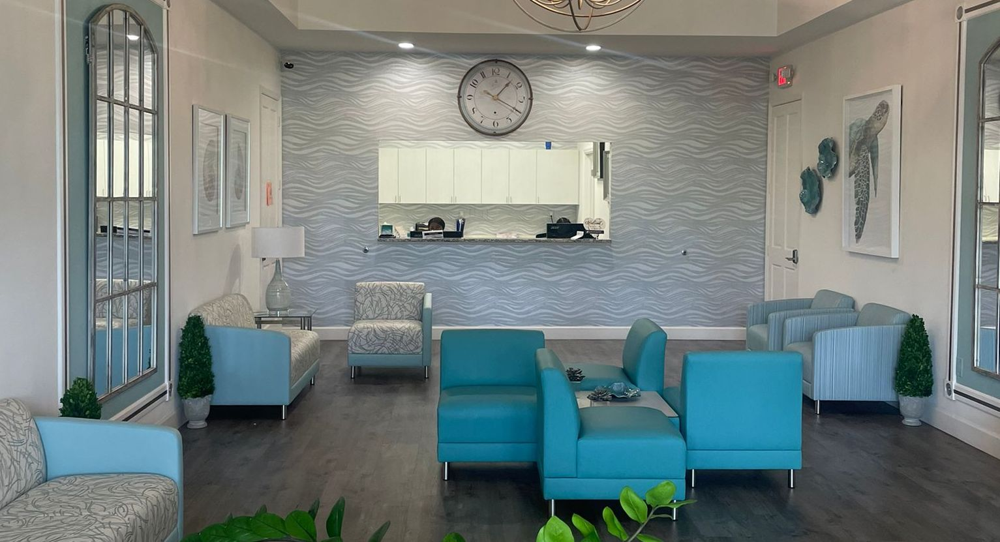
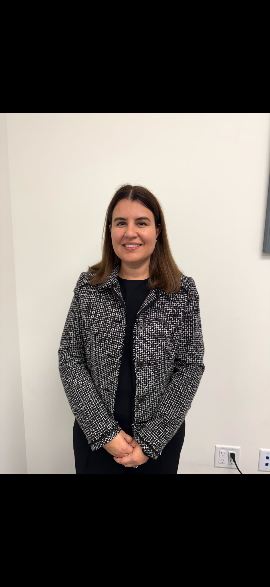

Geriatric careAtención geriátrica
Care for adults 65 and older, with a focus on independence, prevention, and quality of life.Atención para adultos de 65 años o más, enfocada en la independencia, la prevención y la calidad de vida.
Sebastian & Vero Beach, FloridaSebastian y Vero Beach, Florida
A local, independent practice with time for you. From everyday health concerns to healthy aging, our team is here to help you feel cared for.Un consultorio local e independiente con tiempo para usted. Desde sus necesidades cotidianas hasta un envejecimiento saludable, nuestro equipo está aquí para atenderle.
Call for an appointmentLlame para una cita(772) 589-0300Monday–Friday, 8 AM–5 PM · Holiday hours may vary.Lunes a viernes, 8 a. m.–5 p. m. · El horario puede variar en días festivos.

Insurance, forms & what to bringSeguros, formularios y qué traer
Records, refills & secure messagesExpedientes, recetas y mensajes seguros
Addresses, hours & directionsDirecciones, horarios y cómo llegar
Care for every chapterAtención en cada etapa
Our focus is geriatric care, alongside primary care for adults. We help connect the pieces: prevention, medications, ongoing conditions, and care with specialists.Nos enfocamos en la atención geriátrica y ofrecemos atención primaria para adultos. Coordinamos la prevención, los medicamentos, las enfermedades crónicas y la atención con especialistas.
Care for adults 65 and older, with a focus on independence, prevention, and quality of life.Atención para adultos de 65 años o más, enfocada en la independencia, la prevención y la calidad de vida.
Annual visits, health screenings, and care for everyday concerns, with specialists involved when needed.Visitas anuales, exámenes preventivos y atención para problemas cotidianos, con especialistas cuando sea necesario.
Ongoing support for conditions such as diabetes and arthritis, with regular check-ins and coordinated care.Apoyo continuo para condiciones como diabetes y artritis, con seguimiento regular y atención coordinada.
Help with prescription refills, reviewing medications, and coordinating your treatment.Ayuda con renovaciones de recetas, revisión de medicamentos y coordinación de su tratamiento.
Care between visits, too.También le atendemos entre visitas. Ask about telehealth appointments. On weekends, our answering service can take messages and help you reach a provider when needed.Pregunte por las citas de telesalud. Los fines de semana, nuestro servicio telefónico recibe mensajes y ayuda a contactar a un profesional cuando sea necesario.
Call our teamLlame a nuestro equipoPeople, firstLas personas, primero
Founded by Dr. Guillermo Morel and Dr. Eileen Fermin in 2008, TUYA PA brings physicians and advanced practice providers together in one local team.Fundado por el Dr. Guillermo Morel y la Dra. Eileen Fermin en 2008, TUYA PA reúne a médicos y profesionales de práctica avanzada en un equipo local.

MD
Geriatric Medicine · Co-founderMedicina geriátrica · Cofundador

MD
Geriatric Medicine · Co-founderMedicina geriátrica · Cofundadora

PA-C
Physician AssistantAsistente médica

ARNP-BC
Nurse PractitionerEnfermera de práctica avanzada

MD
Medical DoctorMédica

ARNP
Nurse PractitionerEnfermera de práctica avanzada
Looking for a particular provider? Call us for their office location and appointment availability.¿Busca a un profesional en particular? Llámenos para conocer su ubicación y disponibilidad de citas. (772) 589-0300
Here in your communityAquí, en su comunidad
Find us on US-1 in Sebastian and Vero Beach. Call (772) 589-0300 for either office.Estamos en US-1 en Sebastian y Vero Beach. Llame al (772) 589-0300 para cualquiera de las oficinas.
Monday–FridayLunes a viernes
8 AM–5 PM
Monday–FridayLunes a viernes
8 AM–5 PM
Holiday hours may vary. Please call before visiting without an appointment.El horario puede variar en días festivos. Llame antes de visitarnos sin cita.
New to TUYA PA?¿Es nuevo en TUYA PA?
Start with a call. We’ll help you check your insurance, choose an office, and arrange your first appointment.Empiece con una llamada. Le ayudaremos a confirmar su seguro, elegir una oficina y programar su primera cita.
Our listed plans include:Nuestros planes listados incluyen:
Participation varies by specific plan and provider. Please call to confirm your plan before booking.La participación varía según el plan y el profesional. Llame para confirmar su plan antes de programar una cita.
Check your plan with usConsulte su plan con nosotrosComplete the new-patient packet at home or in our office.Complete el paquete para pacientes nuevos en casa o en nuestra oficina.
For family & caregiversPara familiares y cuidadores
You’re welcome to call with practical questions about appointments, insurance, and our offices. We can also explain the authorization needed to help with a loved one’s care.Puede llamarnos con preguntas sobre citas, seguros y nuestras oficinas. También podemos explicarle la autorización necesaria para ayudar con la atención de un ser querido.
Let’s talkConversemos · (772) 589-0300